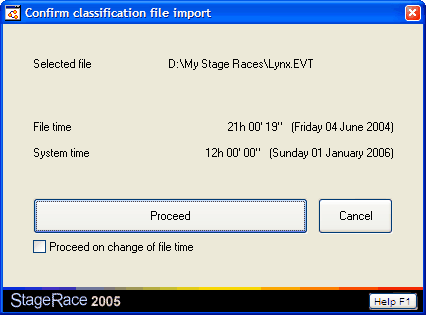

This Confirm classification file import dialog appears between the moment that you select a file to import classification data from, and the moment that the file is read from disk as the import continues. This way you can choose a file and then monitor it until you see that it is being updated by for instance a photo finish operator, so that you can import the most recent data.

Confirm classification file import dialog
The dialog shows the chosen file's name as well as its file time in order to decide whether the most recent version is available already. As a reference the current system time is shown.
Note that the system time is taken from your local computer, while the file's time might depend on an other computer in your network, if that is where you are importing the file from.
As soon as the file satisfies your expectations, you use the Proceed button. Cancel terminates the import altogether.
Proceed on change of file time will have StageRace proceed automatically on the very first occurring change in the file time.
The appearance of this dialog can be switched off entirely through the Options dialog.